Austrip
A full UI/UX overhaul of the Austrip travel booking platform, focusing on usability and conversion optimization.
UX/UI case study by Maor Cohen Falah
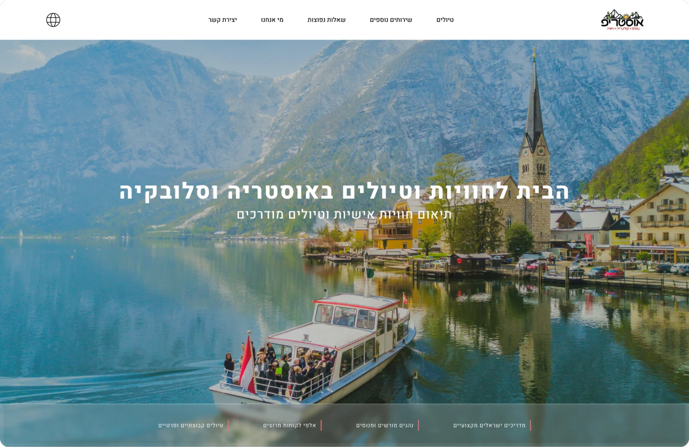
Redesigning Austrip to boost booking
The original Austrip platform was outdated, cluttered, and lacked visual order, which hindered the booking process. I redesigned the interface from the ground up. By simplifying the flow and adding clear trust signals, I transformed a chaotic interface into a seamless, high-converting digital journey.
A chaotic interface in the way of booking
Outdated and cluttered
The original platform was outdated, cluttered, and lacked visual order, resulting in a chaotic interface that hindered the booking process.
A ground-up redesign
A ground-up redesign of the interface, simplifying the flow and adding clear trust signals throughout the booking journey.
Trust from the first click
A seamless, high-converting digital journey that turns a confusing experience into one that builds user trust from the first click.
How the best travel sites build trust
To address these challenges, I conducted a competitive analysis of leading travel platforms to understand industry standards for user-centric design. I evaluated key players in the travel industry, focusing on how they structure complex information, integrate social proof, and design clear calls to action.
Visual trust
Top-performing sites use consistent visual hierarchy to build user confidence immediately upon landing.
Scannable content
Successful platforms prioritize scannability by using structured lists, icons, and concise headings rather than dense text blocks.
Transparency
Clearly displayed logistics like pickup details and policies like cancellation terms are essential to reducing user anxiety during the booking process.
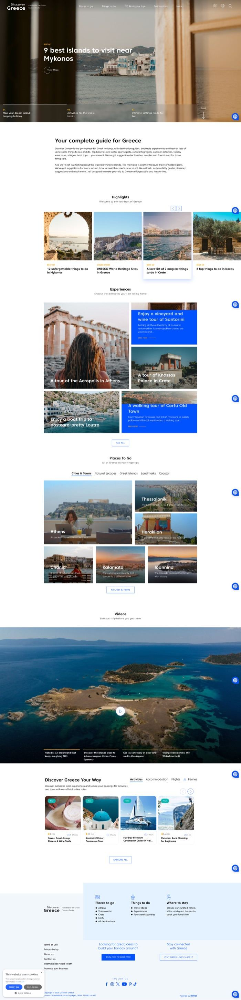
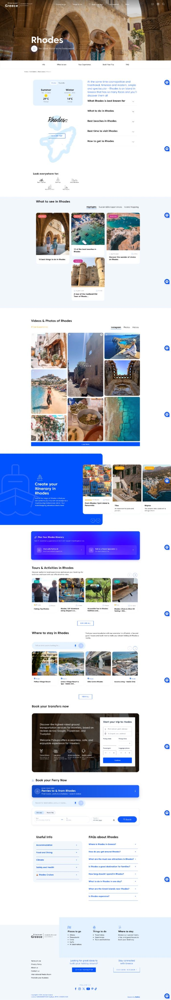
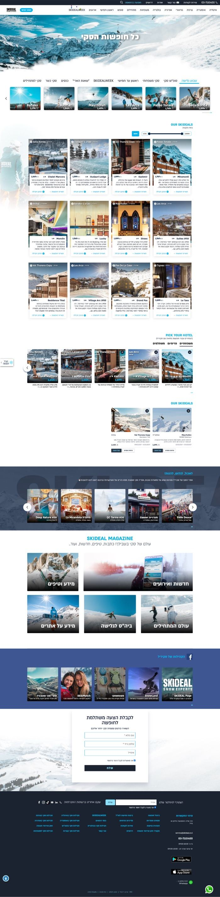
Less cognitive load, more trust
Following the research phase, I focused on translating insights into a clean, intuitive design. My approach was guided by two primary goals: reducing cognitive load and building user trust.
Redefining visual hierarchy
I completely restructured the product page. By moving critical information like price, availability, and cancellation policies to the top, I ensured users can find what they need without scrolling.
Enhancing scannability
I replaced dense text paragraphs with structured lists and icon-based sections (such as "What to Bring" and "Essential Info"). This allows users to digest the content at a glance.
Integrating social proof
Adding authentic user reviews and star ratings was a strategic decision to validate the experience and reduce booking anxiety.
Simplified navigation
I implemented a clearer, more consistent navigation flow, ensuring that key actions like "Check Availability" or "Book Now" are always within reach.
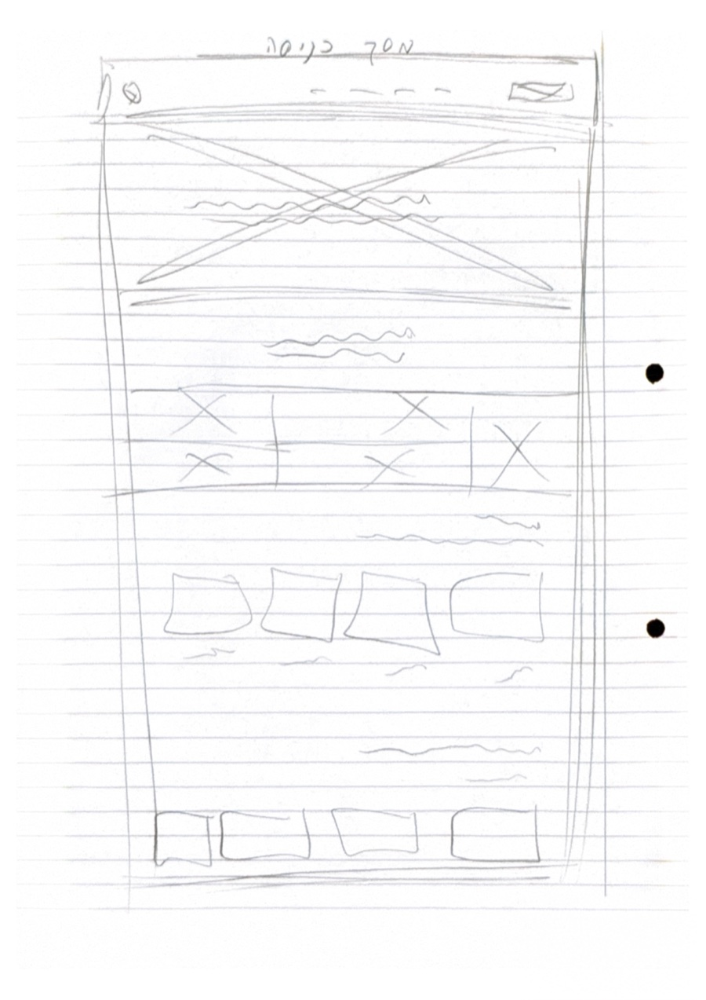
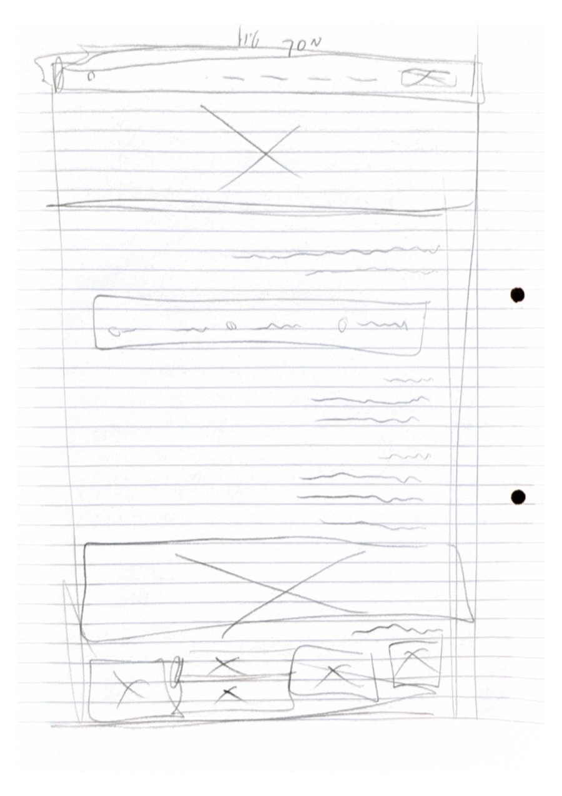
The homepage, rebuilt
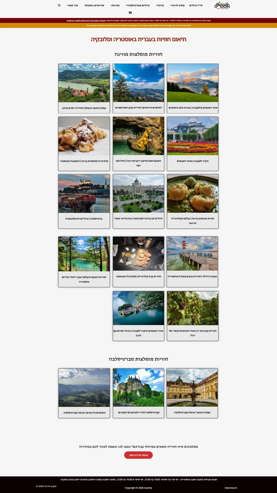
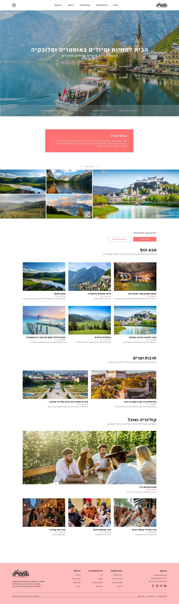
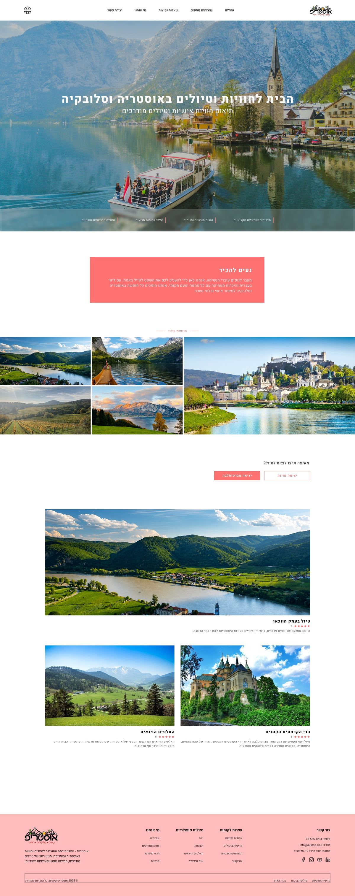
The price and one action, up front
The individual tour page told the same story as the homepage. The old layout buried the price and the call to action under dense paragraphs, with a long booking form that repeated itself twice on the same page. I rebuilt it around a clear hierarchy: the price and a single "Book now" action up front, key facts available at a glance, and the details that matter (itinerary, what to bring, cancellation policy) organized into short, scannable sections instead of walls of text.
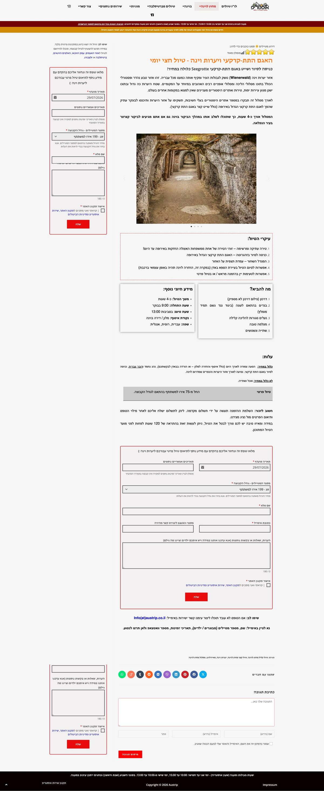
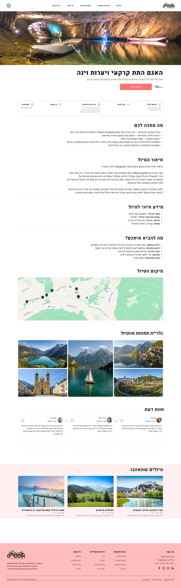
Simplicity builds trust
Simplicity builds trust
The visual clutter on the old site wasn't just an aesthetic problem, it created uncertainty for the user. Removing noise makes people trust the process more, even without changing a single word of content.
Research before redesign
Analyzing competitors like Discover Greece and SkiDeal helped me understand the industry standard before I started designing, instead of guessing what "looks good."
Small friction points add up
A booking form that repeated itself twice on the same page seemed like a minor detail, but it's exactly the kind of thing that makes users drop off. Fixing small friction points like this turned out to be a big part of the work.
Thanks for reading!
More projects
Keep exploring the work.